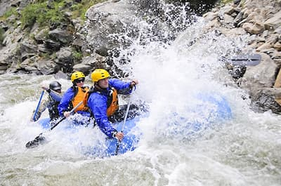

Expedição Rio Abaixo
Um passeio para aproveitar a natureza, compartilhar bons momentos e viver uma experiência divertida em grupo.
Entre em contato com nossa equipe para tirar dúvidas e escolher o passeio ideal para você.
Fale com nossa equipe
Um passeio para aproveitar a natureza, compartilhar bons momentos e viver uma experiência divertida em grupo.

Uma aventura com mais emoção, ideal para quem deseja enfrentar corredeiras e sentir a energia das águas.

Uma experiência que combina aventura, cooperação e contato com a natureza em um percurso cheio de desafios.
| Passeio | Nível | Duração | Público |
|---|---|---|---|
| Expedição Rio Abaixo | Iniciante | 2 horas | Famílias e iniciantes |
| Corredeira Radical | Avançado | 3 horas | Aventureiros |
| Desafio das Águas | Intermediário | 2 horas e 30 minutos | Grupos e aventureiros |